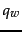

Next:
Permuterm indexes
Up:
Wildcard queries
Previous:
Wildcard queries
Contents
Index
General wildcard queries
We now study two techniques for handling general wildcard queries. Both techniques share a common strategy: express the given wildcard query
 as a Boolean query
 on a specially constructed index, such that the answer to
is a superset of the set of vocabulary terms matching
. Then, we check each term in the answer to
against
, discarding those vocabulary terms that do not match
. At this point we have the vocabulary terms matching
and can resort to the standard inverted index.
on a specially constructed index, such that the answer to
is a superset of the set of vocabulary terms matching
. Then, we check each term in the answer to
against
, discarding those vocabulary terms that do not match
. At this point we have the vocabulary terms matching
and can resort to the standard inverted index.
Subsections
© 2008 Cambridge University Press
This is an automatically generated page. In case of formatting errors you may want to look at the PDF edition of the book.
2009-04-07